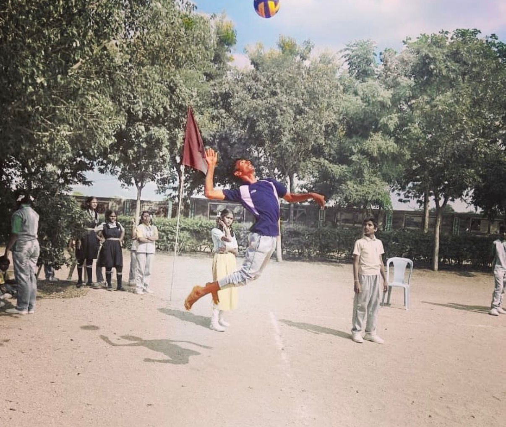
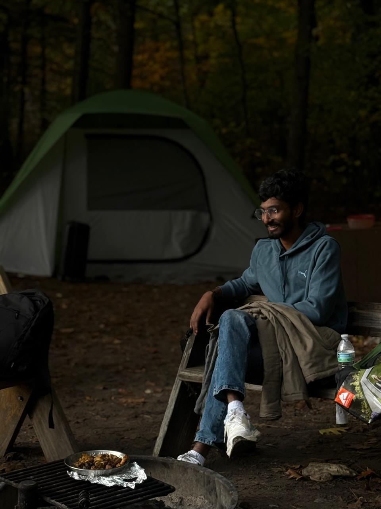
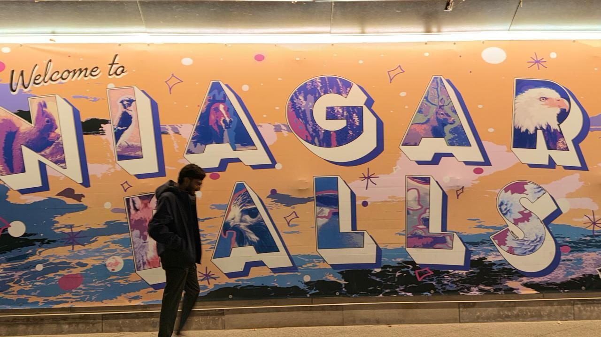

💼 Role & Experience
Full-Stack Web Developer Intern at Prodigy Infotech.
- Designed and implemented responsive web applications
- Collaborated with teams on front-end and back-end technologies
- Practiced debugging and troubleshooting techniques
🎯 Hobbies & Interests
- Playing volleyball
- Exploring new technologies
- Travelling around and discovering new places
🎓 Major & Motivation
I am pursuing this degree to further my passion for technology and to make meaningful contributions to the field. I chose this course to strengthen my technical foundations and gain a deeper understanding of core Computer Science concepts.
🚀 Future Goals
I aim to become a software engineer, applying strong algorithmic thinking to build reliable, high-performance applications and systems.
📸 Life Beyond Code


